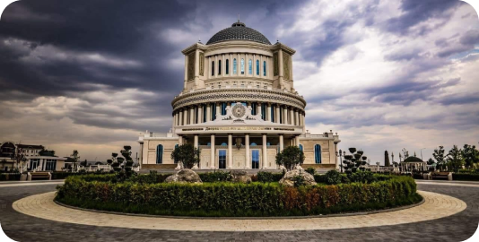
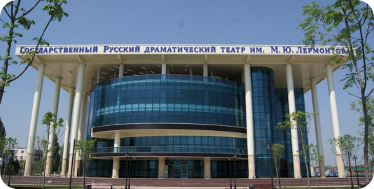
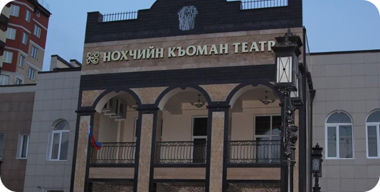

Театры
Выставки
Мероприятия
Достопримечательности
Отели
Грозный

театр «Се́рло»
Чеченский государственный молодёжный театр
«Се́рло» — театр, расположенный в Грозном.

Театр им. М. Ю. Лермонтова
Государственный русский драматический театр был
основан в 1938 г. В год 100-летия смерти Михаила
Лермонтова театру присвоили имя классика русской
литературы.

“Нохчийн къоман театр”
Чеченский государственный драматический театр
имени Ханпаши Нурадилова является культурным
достоянием Чеченской Республики, одним из самых
сильных по своему эмоциональному воздействию
средств духовного, эстетического воспитания
общества.